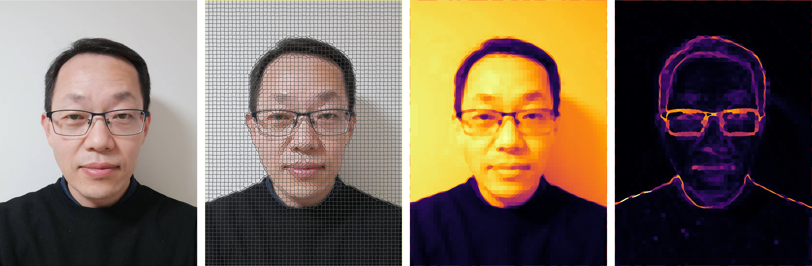

Code
tibble::tribble(
~Items, ~Infos,
"Name", "Kang Wu",
"E-mail", "wu__kang@126.com",
"ORCID", "https://orcid.org/0000-0002-9024-795X"
) |>
gt::gt()| Items | Infos |
|---|---|
| Name | Kang Wu |
| wu__kang@126.com | |
| ORCID | https://orcid.org/0000-0002-9024-795X |

df <- tibble::tibble(
num = c(5:1),
grant_category = c(
"General Science and Technology Plan Project of Putuo District, Zhoushan City",
"Medical guidance by the Shanghai Science and Technology Commission",
"National Key Research and Development Program",
"National Natural Science Foundation for Youth",
"Shanghai Science and Technology Commission for Youth"),
grant_num = c(
"2023YB003", "18411970700", "2018YFD0500900",
"81301407", "12ZR1448200"),
project_leader = c(
rep("Kang Wu", 2),
"Kang Wu (sub-project 3)",
rep("Kang Wu", 2)),
duration = c(
"2023-01 ~ 2025-06",
"2018-09 ~ 2021-09",
"2018-06 ~ 2021-09",
"2014-01 ~ 2016-12",
"2012-10 ~ 2015-09"),
funding_RMB = c("12", "20", "47 of 1263", "23", "10")
)
df |>
gt::gt()| num | grant_category | grant_num | project_leader | duration | funding_RMB |
|---|---|---|---|---|---|
| 5 | General Science and Technology Plan Project of Putuo District, Zhoushan City | 2023YB003 | Kang Wu | 2023-01 ~ 2025-06 | 12 |
| 4 | Medical guidance by the Shanghai Science and Technology Commission | 18411970700 | Kang Wu | 2018-09 ~ 2021-09 | 20 |
| 3 | National Key Research and Development Program | 2018YFD0500900 | Kang Wu (sub-project 3) | 2018-06 ~ 2021-09 | 47 of 1263 |
| 2 | National Natural Science Foundation for Youth | 81301407 | Kang Wu | 2014-01 ~ 2016-12 | 23 |
| 1 | Shanghai Science and Technology Commission for Youth | 12ZR1448200 | Kang Wu | 2012-10 ~ 2015-09 | 10 |